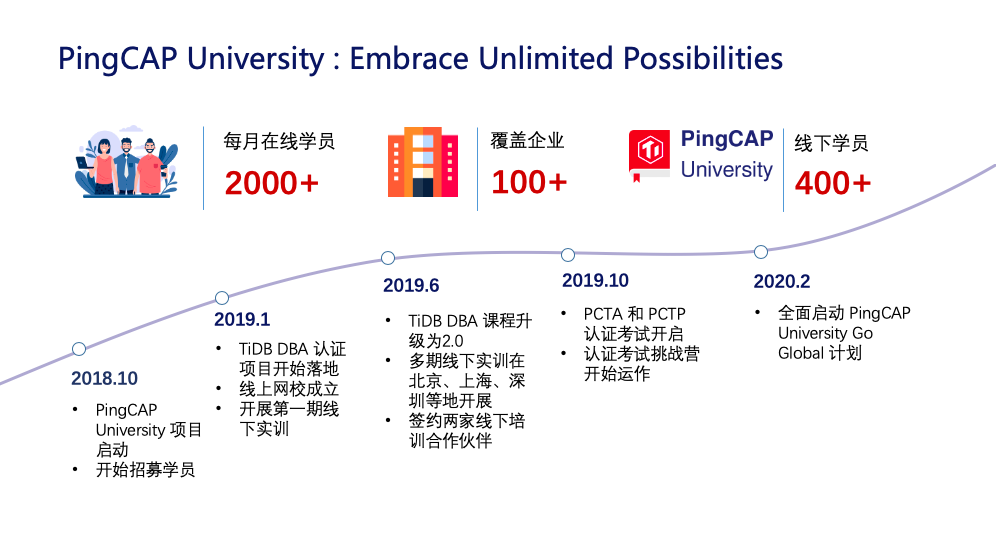
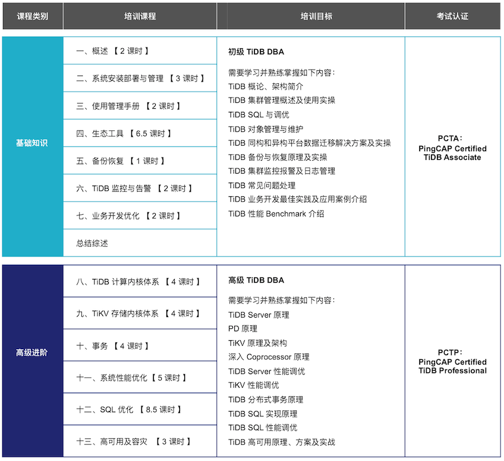
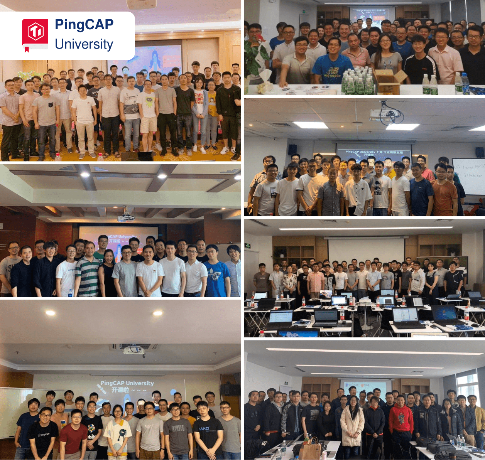

PingCAP University —— Embrace Unlimited Possibilities
PingCAP University 是 PingCAP 官方面向企业和个人，致力于培养开发、管理和应用分布式关系型数据库系统的一流人才而设立的培训和认证机构。
PingCAP University 目前提供两大人才培养项目：
- 培养具备独立运维和管理分布式关系型数据库的 TiDB DBA 认证项目，即 PCTA（PingCAP Certificated TiDB Associate）— PingCAP 公司认证 TiDB 数据库专员和 PCTP（PingCAP Certified TiDB Professional）— PingCAP 公司认证 TiDB 数据库专家；
- 培养独立开发 TiDB 生态细分模块能力的 Talent Plan 项目。
PingCAP 讲师团队均来自 PingCAP 官方的资深解决方案架构师、核心技术研发工程师、高级 TiDB DBA 及 TiDB 官方认证讲师，具备专业的 TiDB 理论素养，拥有丰富的实战经验。
TiDB DBA 认证项目简介
TiDB DBA 认证项目自 2018 年 10 月启动、2019 年 1 月正式落地，得到了社区伙伴的广泛响应。截止 2020 年 3 月 7 日，线上课程每月有来自国内外的 2000 余人观看，线下实训项目成功举办 11 期，400 余同学顺利毕业，数十名同学通过 PCTA 、PCTP 认证考试，这批应用 TiDB 的核心人才正服务于各行各业。

TiDB DBA 认证项目课程亮点
1. 核心工程师亲授： 所有授课讲师均为 TiDB 核心研发工程师或客户支持工程师，原厂技术原厂传授，更有明星讲师倾囊相授。
2. 课程体系完善： 原厂技术核心、理论实操并重、线上线下结合，助力深度理解 TiDB 架构、原理及最佳实践，带来更多同行认可。
3. 前沿技术解读： 不止于 TiDB ，更有 NewSQL 数据库领域前沿技术、多种行业大厂应用场景等丰富呈现，持续更新，与未来同行。
4. 原厂权威认证： PCTA 基础认证注重实践，PCTP 进阶认证注重深度原理，严格的考试体系保障原厂背书价值，打开高起点职场大门。
TiDB DBA 认证项目课程内容
随着 TiDB 产品的持续迭代、用户场景的不断丰富，PingCAP University 在实践中保持与学员的沟通，持续打磨课程，TiDB DBA 认证项目的课程内容不断升级。TiDB DBA 认证项目 2.0 于 2019 年6月推出，在保留高密度干货、理论和实操相结合的一贯特点之外，本次升级有以下方面的优化：
- 课程内容扩展：2.0 课程增加了分布式事务原理、存储引擎内核原理、计算引擎内核原理、优化器深度解析等内容，整个课程深入浅出、更加完整和体系化；
- 优化学习曲线：2.0 课程分为基础篇、高级进阶篇和扩展篇三个层次，层层递进，能满足不同层级的学员，从入门到进阶一次搞定；
- 知其然，更知其所以然：2.0 课程不但教学员如何操作，还会讲解 TiDB 计算、存储、调度等底层架构原理，以及时下火热的云原生技术、混合数据库（HTAP），让学员们能从全局更好地了解和使用 TiDB，深刻理解数据库发展的新趋势；
- 理论实践两手抓：2.0 课程延续了 1.0 课程的设计，理论知识和实操课程并重。在实操课程，我们给每个学员配备了硬件环境，从安装部署升级、数据迁移、到跨机房多活高可用部署，老师都会全程通过 Demo show 的方式，让学员们真正可以快速学以致用。
TiDB DBA 认证项目 2.0 课程框架见下图：

线上课程
PingCAP University TiDB DBA 认证项目 官方网校 已正式上线，可免费进行线上基础课程 PCTA 的学习，有助于学员快速了解 TiDB 产品全貌。学员除了可以在线自主学习外，还可以参加 在线学习打卡营，在讲师集中答疑中进行深入交流，优秀学员还可享受线下培训的奖励计划。
线下实训
线上课程成绩优秀的小伙伴，对社区有突出贡献的布道师以及购买商业培训认证服务的企业将会被邀请参与线下实训项目。实训项目包含 PCTA 和 PCTP 两部分内容，6天*8学时/天=48学时，一般在周末两天进行，持续3周。
截止目前，线下实训已成功举办 11 期，累计线下学员数 400 余人，累计覆盖 100 多家企业。
学员们说
- 内容安排得很充实，课程设计很好。——孙同学，某证券公司
- 之前没怎么接触过 TiDB，所以觉得目前上课方式和内容很好，干货比较多。——柳同学，某银行
- 整体课程都很不错，前面的理论有一些没有懂，通过后面的实践这些原理都得到了很好的理解。老师们都非常厉害，时间允许的话，希望在优先保证正常内容讲解的基础上能扩展更多知识点。——王同学，某 IT 服务商
- 课程安排得很饱满、合理，整体感觉不错。——彭同学，某网约车平台
- 课程讲到了 Binlog 和 DM 以及高可用，不过感觉只有两地三中心的实战是不够的，周边生态工具其实在平时运维场景中可能是使用比较多的，可以通过几个重要场景实践和理论一起讲感觉会更好些。——Mike 同学，某电商平台
- 希望可以有更多生产环境中的问题和建议可以分享，尤其是不同类型的公司使用的重度或者轻度 TiDB 的场景介绍，甚至是其中部分组件的使用特点以及适配程度。大家业务不同，需求不同，可能会产生一些其他的思维碰撞。——陈同学，某移动支付解决方案提供商
- 课程内容丰富全面，对于掌握 TiDB 运维知识及其实现原理非常有用。——李同学，某大型网络银行
- 课程形式方面，线上学习灵活，线下学习高效，可以根据自己的时间安排选择。官方在 B 站也有定期的分享视频。课程内容方面，分类详细，学习安排紧凑，可以全方位深入了解 TiDB 的设计和使用理念。——张同学，某知名弹幕网站
- PingCAP University 的课程优点：课程视频丰富，文档丰富详细。个人学习过程中也感到稍有不足，比如部分视频过长，不精练，需要很长时间才能看完。——刘同学，某知名本地信息网站

认证考试
PCTA 和 PCTP 是对于即将或已经从事 DBA 、架构师等职位的人员掌握和使用 TiDB 的能力进行测试和评定，并由 PingCAP 公司作为唯一权威机构向考核通过的人才颁发相应证书。
PCTA （PingCAP Certified TiDB Associate）是 PingCAP 公司认证 TiDB 数据库专员的缩写。PCTA 要求具备安装部署及日常运维分布式关系型数据库的能力。PCTA 需要学习并熟练掌握 TiDB 架构原理、安装部署、周边工具等基础知识。
PCTP（PingCAP Certified TiDB Professional）是 PingCAP 公司认证 TiDB 数据库专家的缩写。PCTP 要求具备管理大型分布式关系型数据库集群的能力。PCTP 需要学习并熟练掌握 TiDB 的深度原理及高级 Feature、性能调优、SQL 优化、Trouble Shooting 等进阶内容，要成为 PCTP 必须先获得 PCTA 认证。
目前 PCTA 和 PCTP 认证主要面向 TiDB 3.0 版本。